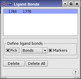

| Using | Features | Links |
This panel is used to define the bonds around which reconfiguration takes place in conformational searches involving inorganic complexes.
To open this panel, choose Ligand Bonds from the Search variables option menu in the CSearch tab of the Conformational Search panel and click Edit.
Conformational searches of inorganic complexes produce structures in which ligand positions vary with respect to the metal center. Maestro permits the specific definition of the ligand bonds around which the reorientation takes place.
To use this feature, choose Atom or Bond from the Pick menu and click on the desired bonds or atom pairs that define these bonds in the Workspace. A new entry appears in the list at the top of the panel, and Maestro marks the bond with a purple dotted line and a scissor icon. The selected bond is distinguished by purple lines on either side of the dotted line.
After the bonds have been selected, click Perform Automatic Setup in the Conformational Search panel. Maestro will generate molecular rotation and translation commands for each fragment created by the defined ligand bonds. In addition, it produces torsion rotations, torsion checks, and chiral atom definitions. To view or edit the automatically generated settings, open the Torsion Rotations, Torsion Check, or Chiral Atoms panels.

This list shows the atoms that define the ligand bonds to use in the calculations. You can select a line in the list to display or delete, or redefine the bond by picking different atoms.
If you clicked Perform Automatic Setup in the Conformational Search panel, this list contains the results of the setup when you open the panel.
To define a ligand bond, pick two atoms with the standard picking controls in this section. As the first atom is picked, a purple box is placed around it. Once the second atom is picked, a new entry is displayed in the list.
A ligand bond can be redefined by picking new atoms while it is selected in the list.
If this option is selected, the selected atoms are marked with a purple broken line. To distinguish the currently selected distance check, a solid line is placed on either side of the broken one.
To delete a defined ligand bond, select it by clicking on it in the list, or re-pick the atoms that define it, then click Delete.
To delete all the ligand bonds, click this button.